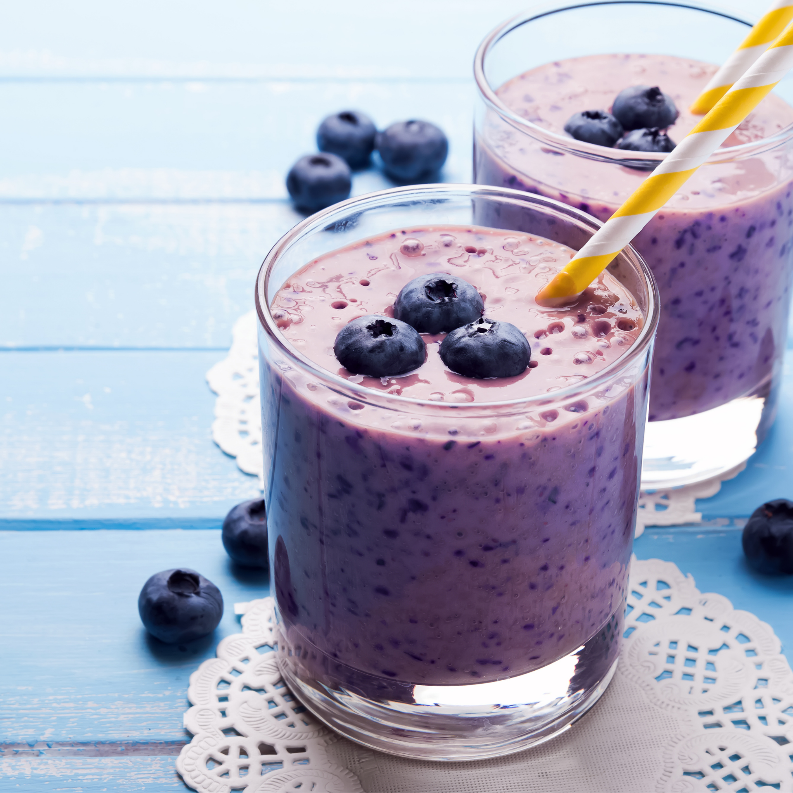

Dicas para conseguir fazer em casa a VITAMINA do bem estar
Clique no botão abaixo para continuar e saber mais sobre a vitamina
Uma equipe de 14 cientistas de uma universidade de prestígio nos EUA está por trás de uma vitamina do bem estar,
que contém todas as proteínas que nosso corpo precisa diariamente, esta vitamina dá muita energia e vigor ao nosso
organismo.
Além disso, é uma vitamina deliciosa!
Mais de 21.374 pessoas já testaram esta vitamina, e os feedbacks são maravilhosos, todos os feedbacks citam que a
vitamina é uma delícia, traz energia e muito vigor sempre alguns minutos após tomar.
Clique no botão abaixo para continuar e saber mais sobre a vitamina
© 2022 – Todos os direitos reservados. Este site não faz parte nem é endossado pelo Facebook. Facebook é uma marca comercial da Facebook, Inc.